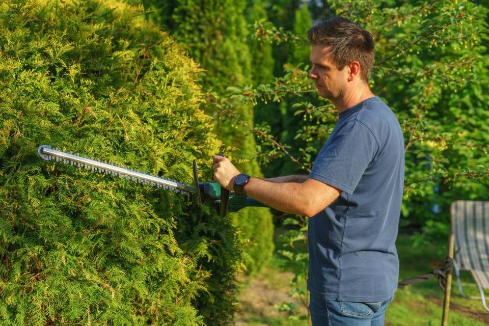

Hecke & Grünschnitt · Bezirk Eimsbüttel
Hecke und Grünschnitt in Eimsbüttel: von Rotherbaum bis Schnelsen
Eimsbüttel ist der Nachbarbezirk unseres Sitzes in der Dosestraße, bis dorthin sind es rund 4 km. Wir schneiden Hecken, nehmen Sträucher heraus und fahren den Grünschnitt ab, vom Reihenhausgarten in Niendorf bis zur Parzelle im Kleingartenverein. Den Festpreis mit Entsorgung erhalten Sie nach einer kostenlosen Besichtigung.
Wo in Eimsbüttel Hecken wachsen
Neun Stadtteile gehören zum Bezirk, und zwischen Süden und Norden liegen Welten. Hoheluft-West ist der am dichtesten besiedelte Stadtteil Hamburgs, Gärten sind dort meist Innenhöfe. Harvestehude dagegen ist ein Villenviertel zwischen Alster und Isebekkanal, auch in Rotherbaum stehen Villen mit Grundstück. Im Norden prägen Einfamilien- und Reihenhäuser große Teile von Niendorf. Schnelsen wuchs in den 1990er Jahren um zwei Neubaugebiete, Burgwedel und das Gebiet an der Süntelstraße.
Für uns heißt das: Im Süden kürzen wir Sträucher im Hof einer Wohnanlage, im Norden die Hecke rund um den Reihenhausgarten. Die Arbeit selbst beschreibt unsere Seite Hecke und Grünschnitt in Hamburg.
Hecken im Kleingarten: was der Landesbund vorgibt
In Niendorf haben viele Pächter ihre Lauben nach den Weltkriegen sogar zum Wohnen ausgebaut, Kleingärten gehören hier zum Stadtbild. Für Parzellen gilt das Merkblatt des Landesbunds der Gartenfreunde und der Umweltbehörde (gültig seit 1. Januar 2021):
- Hecken dürfen höchstens 1,10 m hoch sein und sind jedes Jahr, spätestens im Winter, auf dieses Maß zurückzusetzen.
- Roden und Schnittmaßnahmen sind nur nach dem 1. Oktober und vor dem 1. März erlaubt.
- Gartenabfälle werden kompostiert. Verbrennen ist verboten, Grünschnitt im öffentlichen Raum abzuladen ebenfalls.
Sprechen Sie größere Rückschnitte vorher mit dem Vorstand Ihres Vereins ab. Was nicht auf den Kompost passt, laden wir auf und fahren es ab.
Bundesrecht und Baumschutzverordnung
Außerhalb der Kleingärten zählt vor allem § 39 Abs. 5 Bundesnaturschutzgesetz. Zwischen dem 1. März und dem 30. September darf niemand eine Hecke beseitigen oder auf den Stock setzen. Ein schonender Pflegeschnitt, der den neuen Zuwachs wegnimmt, ist in dieser Zeit erlaubt.
Die Hamburgische Baumschutzverordnung stellt außerdem jede Hecke ab 80 cm Höhe unter Schutz. Laut Bezirksamt Eimsbüttel kümmert sich dessen Naturschutzabteilung um die Verordnung, Maßnahmen an geschützten Gehölzen sind dort das ganze Jahr über antragspflichtig. Den Online-Antrag finden Sie im Serviceportal Hamburg, Fragen beantwortet die Abteilung unter baumschutz@eimsbuettel.hamburg.de.
Recyclinghof Niendorf oder Abholung
Der Recyclinghof der Stadtreinigung im Bezirk liegt am Krähenweg 22 in Niendorf. Grünabfälle und Laub gibt ein Privathaushalt dort laut Preisliste 2026 in haushaltsüblicher Menge kostenlos ab. Die Grenze ist nicht genau beziffert, fragen Sie deshalb vor einer großen Fuhre nach. Für kleinere Mengen bleiben die Biotonne und die Laubsäcke der Stadtreinigung.
Wer eine lange Hecke kürzen lässt, braucht keinen Anhänger. Wir nehmen den Schnitt nach der Arbeit mit, die Entsorgung ist im Festpreis eingerechnet.
Häufige Fragen
Fragen und Antworten
Wir haben eine Parzelle in Niendorf. Wie hoch darf die Hecke sein?
Nach dem Merkblatt für Hamburger Kleingärten höchstens 1,10 m. Zurückgesetzt wird jedes Jahr, spätestens im Winter. Schnitt und Rodung sind dort nur zwischen 1. Oktober und 1. März erlaubt.
Kann ich die Hecke zum Nachbarn in Lokstedt im August kürzen lassen?
Einen schonenden Formschnitt ja. Ein radikaler Rückschnitt oder das Entfernen muss bis Oktober warten. Besetzte Nester sind nach § 44 Bundesnaturschutzgesetz das ganze Jahr geschützt.
Wohin geht in Eimsbüttel der Antrag, eine Hecke zu roden?
An die Naturschutzabteilung des Bezirksamts Eimsbüttel, am einfachsten online über das Serviceportal Hamburg. Nötig ist das bei Hecken ab 80 cm Höhe. Wir fangen erst an, wenn die Genehmigung da ist.
Ich habe selbst geschnitten. Nehmen Sie nur die Äste mit?
Ja. Schicken Sie uns ein Foto vom Haufen und sagen Sie, wie wir hinkommen. Danach nennen wir Ihnen einen Festpreis für Aufladen und Entsorgen.
Kontakt
Besichtigung anfragen
Kostenlos und unverbindlich, vor Ort oder per Video. Wir melden uns innerhalb eines Werktags.
Einsatzgebiet
Hecke & Grünschnitt in weiteren Bezirken
Bezirk Eimsbüttel